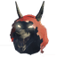
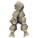
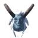
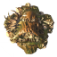

Trofeos
Trofeos en Valheim – 67 objetos con bioma, origen, herramienta necesaria, receta y uso.
No se encontró ningún objeto.
 Kvastur
Kvastur
El mejor amigo de una bruja.
Cómo conseguirlo
- Lo suelta: Kvastur · Pantano
 Trofeo de abominación
Trofeo de abominación
Lleva tanto tiempo muerta, que está empezando a vivir de nuevo.
Cómo conseguirlo
- Lo suelta: Abominación · Pantano · 50 % de probabilidad
Uso
- Ingrediente para: Carnada apestosa
 Trofeo de alce
Trofeo de alce
El poderoso soberano de los bosques del norte.
Cómo conseguirlo
- Lo suelta: Alce · Norte profundo · 10 % de probabilidad
Uso
- Ingrediente para: Degollador, Invocador de espíritus, Pieza fundida: invocador de espíritus, Pieza fundida: tocado del Invocador, Tocado del Invocador
- Material de construcción para: Trono de astas
 Trofeo de arquero
Trofeo de arquero
Estas piernas podrían tener un poder infinito.
Cómo conseguirlo
- Lo suelta: Arquero carbonizado · Tierra de Ceniza · 5 % de probabilidad
 Trofeo de barka
Trofeo de barka
La cabeza congelada de un árbol que una vez estuvo vivo.
Cómo conseguirlo
- Lo suelta: Barka · Norte profundo · 10 % de probabilidad
 Trofeo de Bjorn
Trofeo de Bjorn
Esa mirada sigue siendo atemorizante...
Cómo conseguirlo
- Lo suelta: Bjorn · Bosque negro · 10 % de probabilidad
Uso
- Ingrediente para: Colgante de Bronce, Tocado de Bjorn
- Material de construcción para: Alfombra de piel de bjorn
 Trofeo de Brenna
Trofeo de Brenna
Extrañamente, aún arde.
Cómo conseguirlo
- Lo suelta: Brenna · Bosque negro
 Trofeo de brujo
Trofeo de brujo
Un cálido resplandor casi parece emanar del interior. Manipular con cuidado.
Cómo conseguirlo
- Lo suelta: Brujo carbonizado · Tierra de Ceniza · 5 % de probabilidad
 Trofeo de buicán
Trofeo de buicán
Es como un buitre, pero prospera en climas volcánicos.
Cómo conseguirlo
- Lo suelta: Buicán · Tierra de Ceniza · 10 % de probabilidad
 Trofeo de buscador
Trofeo de buscador
Son menos delicadas de lo que parecen. El cuero de las alas atrapan la luz de las llamas como si recordaran el vuelo.
Cómo conseguirlo
- Lo suelta: Buscador · Tierras Nubladas · 5 % de probabilidad
Uso
- Ingrediente para: Grillete resonante
 Trofeo de buscador soldado
Trofeo de buscador soldado
La cabeza de un campeón caído.
Cómo conseguirlo
- Lo suelta: Soldado buscador · Tierras Nubladas · 5 % de probabilidad
- Destruir: Aldea del Norte · 5,3 % de probabilidad
 Trofeo de cenicerdo
Trofeo de cenicerdo
No te dejes engañar por su sonrisa afable, ya que podría arrancarte el brazo a la primera de cambio.
Cómo conseguirlo
- Lo suelta: Cenicerdo · Tierra de Ceniza · 10 % de probabilidad
Uso
- Material de construcción para: Corona de plumas
 Trofeo de ciervo
Trofeo de ciervo
Es un buen espécimen, pero tendrás que matar más que ciervos si quieres entrar al Valhalla.
Cómo conseguirlo
- Lo suelta: Ciervo · Praderas, Bosque negro · 50 % de probabilidad
Uso
- Ingrediente para: Cuerno de hidromiel de Odín, Quebrantaciervos
- Invoca al jefe: Eikthyr (2 ×)

Trofeo de cultistaLas llamas de sus ojos no se han extinguido aún.
Cómo conseguirlo
- Lo suelta: Cultista · Montaña · 10 % de probabilidad
Uso
- Ingrediente para: Capucha de Fenris
 Trofeo de draco
Trofeo de draco
Todavía notas el frío al tocarlo.
Cómo conseguirlo
- Lo suelta: Draco · Montaña · 10 % de probabilidad
Uso
- Ingrediente para: Bombabosa: Escarcha, Carnada helada, Casco dracónico
 Trofeo de draugr
Trofeo de draugr
Ciérrale la boca si empieza a susurrarte por las noches...
Cómo conseguirlo
- Lo suelta: Draugr · Praderas, Pantano · 10 % de probabilidad
 Trofeo de draugr de élite
Trofeo de draugr de élite
Un escalofrío te recorre todo el cuerpo a causa de la mirada sin vida de esos ojos rojos y brillantes.
Cómo conseguirlo
- Lo suelta: Draugr Elite · Praderas, Pantano · 10 % de probabilidad
- Destruir: Aldea del Norte · 5,3 % de probabilidad
Uso
- Ingrediente para: Mazo de hierro

Trofeo de DvergrFrancamente, es algo turbio que consideres colgar esto en tus muros...
Cómo conseguirlo
- Lo suelta: Mago Dvergr · Tierras Nubladas · 5 % de probabilidad
- Lo suelta: Pícaro Dvergr · Tierras Nubladas, Tierra de Ceniza · 5 % de probabilidad
- Lo suelta: Dvergr encarcelado · Norte profundo · 5 % de probabilidad
 Trofeo de Eikthyr
Trofeo de Eikthyr
Esta cabeza decapitada exuda poder. Haz una ofrenda en las piedras de sacrificio.
Cómo conseguirlo
- Lo suelta: Eikthyr · Praderas
 Trofeo de elaking
Trofeo de elaking
Unos pequeños ojos maliciosos te devuelven la mirada.
Cómo conseguirlo
- Lo suelta: Elaking · Praderas, Bosque negro, Pantano, Montaña, Llanuras, Tierras Nubladas, Tierra de Ceniza, Norte profundo, Océano · 10 % de probabilidad
 Trofeo de esqueleto
Trofeo de esqueleto
La sonrisa inexpresiva de esta calavera te recuerda a la inexorabilidad de la muerte.
Cómo conseguirlo
- Lo suelta: Esqueleto · Praderas, Bosque negro, Pantano, Montaña, Llanuras, Norte profundo · 10 % de probabilidad
Uso
- Ingrediente para: Escudo de torre de hueso, Levantamuertos
- Material de construcción para: Velas inextinguibles
 Trofeo de Fader
Trofeo de Fader
El dragón verde, corrompido más allá de la redención. Ofrécelo a las piedras de sacrificio.
Cómo conseguirlo
- Lo suelta: Fader · Tierra de Ceniza
 Trofeo de fantasma
Trofeo de fantasma
¿Aún susurra sobre algún asunto pendiente?
Cómo conseguirlo
- Lo suelta: Fantasma · Bosque negro · 10 % de probabilidad
 Trofeo de faucesoseas
Trofeo de faucesoseas
Un cráneo hecho de hueso denso, tan peligroso como protector.
Cómo conseguirlo
- Lo suelta: Faucesoseas · Tierra de Ceniza · 33 % de probabilidad
 Trofeo de fenring
Trofeo de fenring
Medio hombre y medio lobo. Su rostro vive con una mueca de sufrimiento constante.
Cómo conseguirlo
- Lo suelta: Fenring · Montaña · 10 % de probabilidad
Uso
- Ingrediente para: Carnada fría, Vista de lobo
 Trofeo de foca
Trofeo de foca
Este animal nunca hizo daño a nadie, y aun así tuvo un final prematuro.
Cómo conseguirlo
- Lo suelta: Foca · Norte profundo · 10 % de probabilidad
 Trofeo de fuling
Trofeo de fuling
Pliegues de piel floja y verde alrededor de un par de ojos oscuros y bañados en odio.
Cómo conseguirlo
- Lo suelta: Fuling · Llanuras · 10 % de probabilidad
Uso
- Ingrediente para: Carnada picosa
 Trofeo de fuling berserker
Trofeo de fuling berserker
Una cabeza canosa que pesa tanto como un peñasco.
Cómo conseguirlo
- Lo suelta: Fuling berserker · Llanuras · 5 % de probabilidad
- Destruir: Aldea del Norte · 1,1 % de probabilidad
Uso
- Ingrediente para: Manto de Evasión
 Trofeo de fuling chamán
Trofeo de fuling chamán
Ni siquiera la muerte le ha borrado esa sonrisa socarrona que lleva plasmada en el rostro…
Cómo conseguirlo
- Lo suelta: Fuling Chamán · Llanuras · 10 % de probabilidad
- Destruir: Aldea del Norte · 5,3 % de probabilidad
 Trofeo de garrapata
Trofeo de garrapata
Un tema para conversaciones...
Cómo conseguirlo
- Lo suelta: Garrapata · Tierras Nubladas · 5 % de probabilidad
 Trofeo de Geirrhafa
Trofeo de Geirrhafa
Te dirige una mirada gélida.
Cómo conseguirlo
- Lo suelta: Geirrhafa · Montaña
 Trofeo de gjall
Trofeo de gjall
Esperemos que no se aleje flotando.
Cómo conseguirlo
- Lo suelta: Gjall · Tierras Nubladas · 30 % de probabilidad
Uso
- Ingrediente para: Pendientes Pulsantes
 Trofeo de gólem de piedra
Trofeo de gólem de piedra
Esta formación de roca cristalina quedaría impresionante de decoración.
Cómo conseguirlo
- Lo suelta: Gólem de piedra · Montaña · 5 % de probabilidad
Uso
- Ingrediente para: Corazón de cristal
 Trofeo de grisucio
Trofeo de grisucio
La cabeza cortada y musgosa de un grisucio.
Cómo conseguirlo
- Lo suelta: Grisucio · Praderas, Bosque negro, Norte profundo · 5 % de probabilidad
- Destruir: Aldea del Norte · 10 % de probabilidad
 Trofeo de grisucio bárbaro
Trofeo de grisucio bárbaro
Hicieron falta siete golpes para arrancarle esa cabeza retorcida del cuerpo.
Cómo conseguirlo
- Lo suelta: Grisucio Bruto · Bosque negro · 10 % de probabilidad
- Destruir: Aldea del Norte · 5,3 % de probabilidad
 Trofeo de guerrero
Trofeo de guerrero
Este cráneo está cubierto de fracturas, como si hubiera recibido muchos golpes a lo largo de los años.
Cómo conseguirlo
- Lo suelta: Guerrero carbonizado · Tierra de Ceniza · 5 % de probabilidad
Uso
- Ingrediente para: Carnada caliente
- Material de construcción para: Cofre de piedra cenicienta
 Trofeo de Hexen
Trofeo de Hexen
Antes de su muerte, sus ojos chispeaban con magia. Ahora están vacíos.
Cómo conseguirlo
- Lo suelta: Hexen · Praderas, Bosque negro, Pantano, Montaña, Llanuras, Tierras Nubladas, Tierra de Ceniza, Norte profundo, Océano · 10 % de probabilidad
Uso
- Ingrediente para: Corona de bruja, Pieza fundida: venganza del norte, Venganza del norte
 Trofeo de jabalí
Trofeo de jabalí
Esta cabeza de jabalí quedaría bonita de decoración en cualquier casa.
Cómo conseguirlo
- Lo suelta: Jabalí · Praderas · 15 % de probabilidad

Trofeo de KrigenAntaño fue un guerrero poderoso, ahora no queda más que un cascarón.
Cómo conseguirlo
- Lo suelta: Krigen · Praderas, Bosque negro, Pantano, Montaña, Llanuras, Tierras Nubladas, Tierra de Ceniza, Norte profundo, Océano · 10 % de probabilidad
 Trofeo de La Reina
Trofeo de La Reina
Ella ha visto demasiado.
Cómo conseguirlo
- Lo suelta: La Reina · Tierras Nubladas
 Trofeo de liebre
Trofeo de liebre
Se dice que estos traen suerte. Pero no para al que pertenecían.
Cómo conseguirlo
- Lo suelta: Liebre · Tierras Nubladas · 5 % de probabilidad
 Trofeo de lobo
Trofeo de lobo
Murió congelado, con el pelaje cubierto en sangre y un aullido atrapado en la garganta.
Cómo conseguirlo
- Lo suelta: Lobo · Montaña · 10 % de probabilidad
Uso
- Ingrediente para: Capa de pelo de lobo
- Material de construcción para: Puente levadizo rústico
 Trofeo de luey
Trofeo de luey
La cabeza gigante cubierta de pelo de una bestia.
Cómo conseguirlo
- Lo suelta: Luey · Llanuras · 10 % de probabilidad
Uso
- Ingrediente para: Brazaletes de Valentía, Carnada brumosa
 Trofeo de masa
Trofeo de masa
Un bulto de materia pegajosa y apestosa.
Cómo conseguirlo
- Lo suelta: Exudador · Pantano · 10 % de probabilidad
- Lo suelta: Babosa · Pantano · 10 % de probabilidad
Uso
- Ingrediente para: Bombabosa: Super veneno, Bombabosa: Veneno
 Trofeo de Moder
Trofeo de Moder
Cabeza de una dragona que no ha perdido ni un ápice de majestuosidad tras la muerte. Haz una ofrenda en las piedras de sacrificio.
Cómo conseguirlo
- Lo suelta: Moder · Montaña
 Trofeo de Morgen
Trofeo de Morgen
La pesadilla deambulante ha llegado a su fin.
Cómo conseguirlo
- Lo suelta: Morgen · Tierra de Ceniza · 5 % de probabilidad
Uso
- Ingrediente para: Corazón de fuego
 Trofeo de muersquito
Trofeo de muersquito
Está muerto y, aun así, no te hace ninguna gracia tocarlo.
Cómo conseguirlo
- Lo suelta: Muersquito · Llanuras · 5 % de probabilidad
 Trofeo de nixe
Trofeo de nixe
Esos ojos diminutos y esos dientes afilados contradicen la naturaleza tranquila de este pequeño lagarto.
Cómo conseguirlo
- Lo suelta: Nixe · Praderas · 5 % de probabilidad
 Trofeo de pegote de lava
Trofeo de pegote de lava
Está muerto, ¿verdad?
Cómo conseguirlo
- Lo suelta: Bola de lava · Tierra de Ceniza · 10 % de probabilidad
 Trofeo de pulpa
Trofeo de pulpa
Restos de aventureros desafortunados, digeridos y gelificados con el tiempo.
Cómo conseguirlo
- Lo suelta: Pulpa informe · Norte profundo · 10 % de probabilidad
Uso
- Ingrediente para: Bomba pegote: pulpa
 Trofeo de restos rancios
Trofeo de restos rancios
Una calavera fétida y putrefacta. No sabes por qué te la has quedado…
Cómo conseguirlo
- Lo suelta: Restos rancios · Bosque negro · 10 % de probabilidad
 Trofeo de sanguijuela
Trofeo de sanguijuela
A pesar de ser viscosa, la piel tiene unos tonos rojos y negros preciosos.
Cómo conseguirlo
- Lo suelta: Sanguijuela · Pantano · 10 % de probabilidad
Uso
- Ingrediente para: Broche de hierro
 Trofeo de serpiente
Trofeo de serpiente
Las escamas han perdido su lustre, pero los ojos aún brillan.
Cómo conseguirlo
- Lo suelta: Serpiente · Océano · 33 % de probabilidad
Uso
- Ingrediente para: Aletas del Destino, Carnada pesada
 Trofeo de sin ojos
Trofeo de sin ojos
Que te desgarren con esas garras debe de ser muy doloroso.
Cómo conseguirlo
- Lo suelta: Sin ojos · Norte profundo · 10 % de probabilidad
 Trofeo de surtling
Trofeo de surtling
Aún arde como una brasa, envuelto en una llama pálida.
Cómo conseguirlo
- Lo suelta: Surtling · Pantano · 5 % de probabilidad
Uso
- Ingrediente para: Tobillera
 Trofeo de Thungr
Trofeo de Thungr
A ver cómo se hace el duro ahora.
Cómo conseguirlo
- Lo suelta: Zil y Thungr · Llanuras
 Trofeo de trol
Trofeo de trol
La piel de cuero cuenta con una tracería apenas visible de símbolos ancestrales.
Cómo conseguirlo
- Lo suelta: Trol · Bosque negro · 50 % de probabilidad
Uso
- Ingrediente para: Carnada musgosa, Trollstav

Trofeo de TuétanoEstos huesos y esta masa viscosa se mantienen unidos por una fuerza intangible. Haz una ofrenda en las piedras de sacrificio.
Cómo conseguirlo
- Lo suelta: Tuétano · Pantano
 Trofeo de Ulv
Trofeo de Ulv
La robusta cola de un chico no tan bueno.
Cómo conseguirlo
- Lo suelta: Ulv · Montaña · 10 % de probabilidad
 Trofeo de valquiria caída
Trofeo de valquiria caída
Aunque está muerta, ansía ver la sangre fluir.
Cómo conseguirlo
- Lo suelta: Valquiria caída · Tierra de Ceniza · 5 % de probabilidad
Uso
- Ingrediente para: Jörmundling
 Trofeo de writhan
Trofeo de writhan
Aunque está muerto, probablemente convenga manipularlo con cuidado.
Cómo conseguirlo
- Lo suelta: Marchitado · Pantano · 10 % de probabilidad
 Trofeo de Yagluth
Trofeo de Yagluth
La cabeza sin corona de un rey muerto.
Cómo conseguirlo
- Lo suelta: Yagluth · Llanuras
 Trofeo del bulto
Trofeo del bulto
Un mejunje pegajoso y negro.
Cómo conseguirlo
- Lo suelta: Bulto · Llanuras · 10 % de probabilidad
Uso
- Ingrediente para: Bombabosa: Brea
 Trofeo del espectro
Trofeo del espectro
La piel que ha mudado un espectro; una túnica ondulante que solo se ve a la luz de la luna.
Cómo conseguirlo
- Lo suelta: Espíritu · Pantano · 5 % de probabilidad
 Trofeo del grisucio chamán
Trofeo del grisucio chamán
Podría regresar, así que no te olvides de cortar los brotes...
Cómo conseguirlo
- Lo suelta: Grisucio Chamán · Bosque negro, Norte profundo · 10 % de probabilidad
Uso
- Ingrediente para: Corazón del Bosque
 Trofeo del Sabio
Trofeo del Sabio
Esta cabeza decapitada exuda poder. Haz una ofrenda en las piedras de sacrificio.
Cómo conseguirlo
- Lo suelta: El Sabio · Bosque negro
 Trofeo vil
Trofeo vil
La mirada ya no está presente...
Cómo conseguirlo
- Lo suelta: Vil · Llanuras · 10 % de probabilidad
Uso
- Ingrediente para: Mentonera de hueso vil